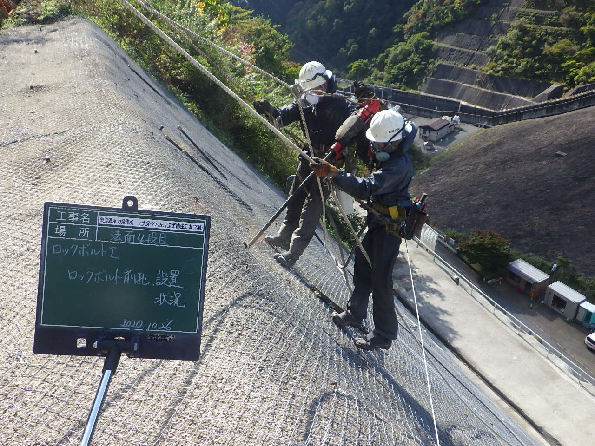
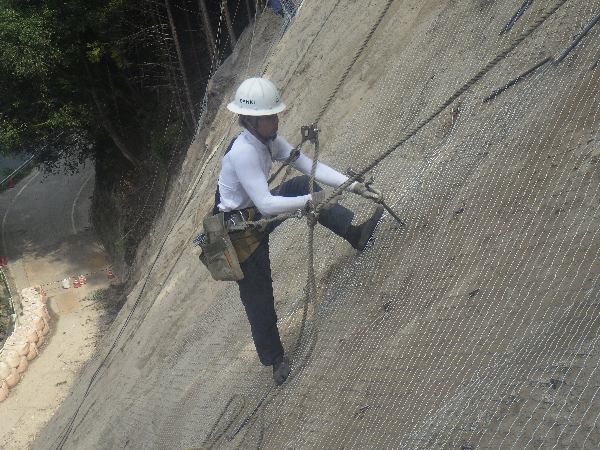
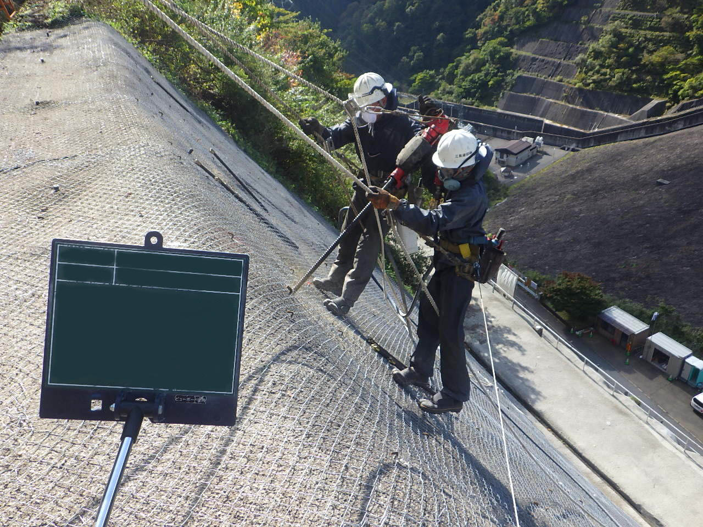
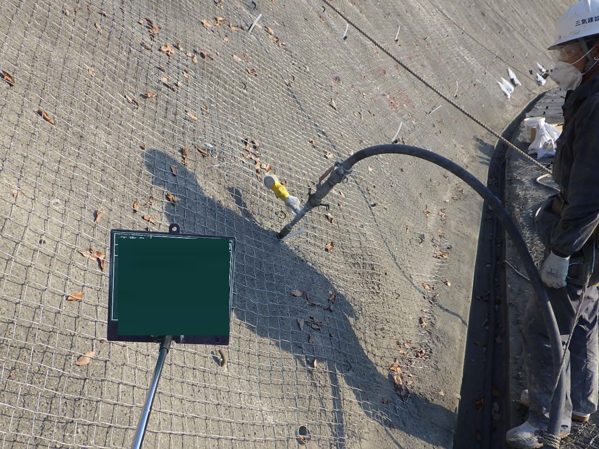

既設法面補修工
既設法面補修工とは
モルタル・コンクリート吹付工は昭和３０年代から施工され始め、現在に至るまで有効に機能しているものや、途中、老朽化によって別の工法に更新されたものがあります。
老朽化の原因は大きくモルタル・コンクリート自体の老朽化と、地山表層の風化あるいは変位がある。老朽化したままの状態では危険なため、補修、補強を行います。

既設法面補修工 手順
- 1.水洗い工
- 既設モルタル・コンクリート面を水洗いする。
- 2.打音・コア抜き調査
- 既設モルタル・コンクリート面をハンマーで叩き音を調べる。コア抜きを行い、背面空隙を調べる。
- 3.ラス張り工
- ラス網を張る
- 4.ロックボルト工
- ロックボルトを挿入する
- 5.空隙充填工
- 既設吹付モルタル背面に空隙や空間が存在する場合、セメント系固化材を充填する。
- 6.モルタル・コンクリート吹付


